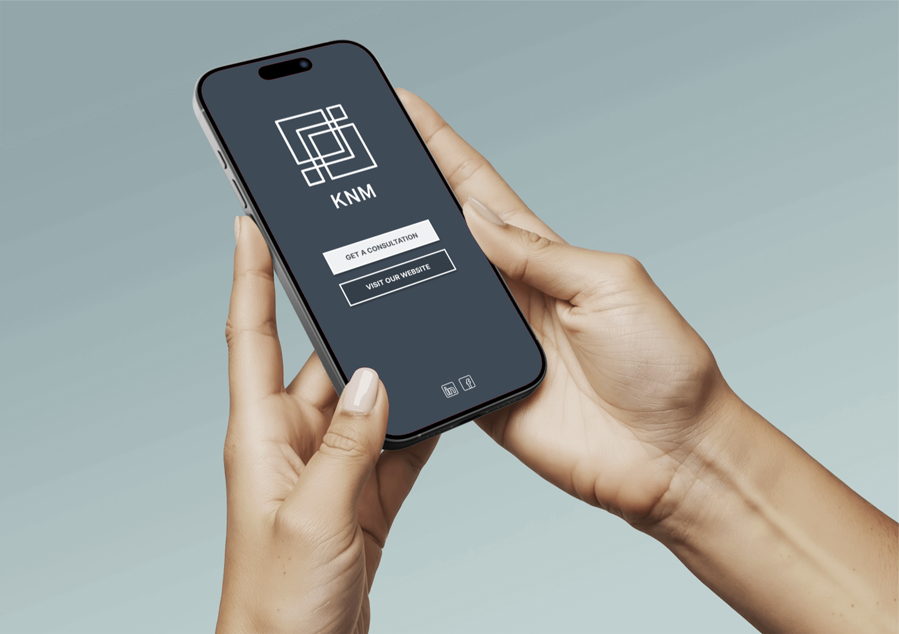
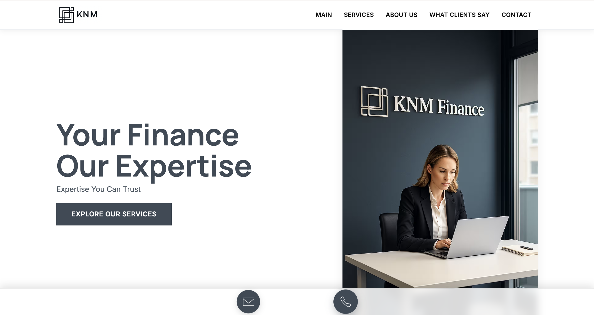
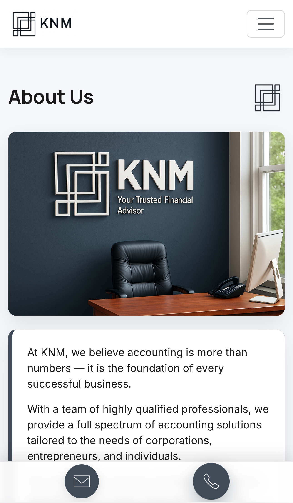
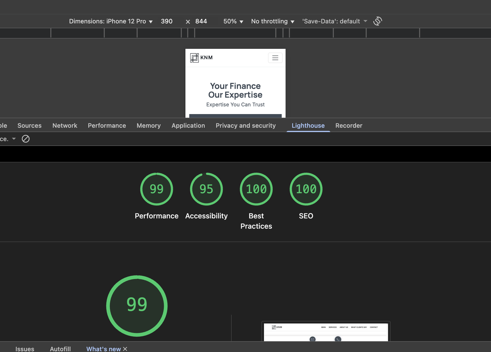

1. Get the calling card and scan the QR — instant entry.

2. Land on a clean Link-in-Bio with focused CTAs.
3. Explore the website — sticky email/phone on mobile for quick contact.
Desktop Hero

The client specifically asked for a minimalist layout with no distractions — every element serves a purpose. Notice the subtle sticky bar below the hero: it keeps the phone and email icons visible as the user scrolls, ensuring there’s always an opportunity for action without cluttering the interface.
Mobile Hero & Sticky Contact

QR → Link-in-Bio → Business Card
SEO & Lighthouse

Walkthrough Video
Short, vertical walkthroughs are a 2025 trend for product sites — fast to digest, clean in presentation, and perfect for mobile.
Want a Full Package Like This?
Card with QR + Link-in-Bio + Website + SEO + Video — shipped fast with clean, accessible code.